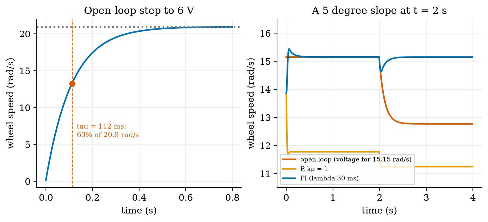
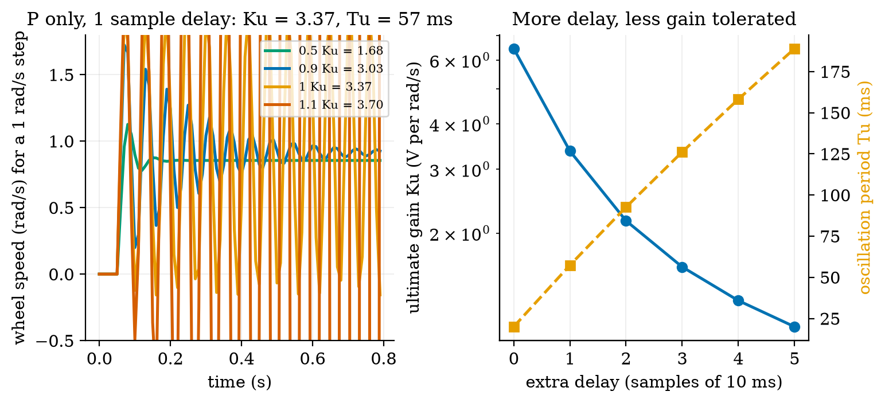
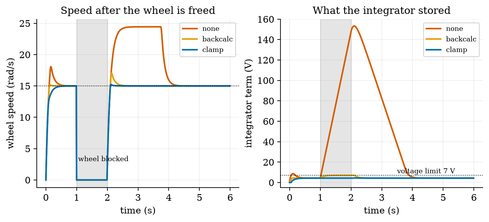
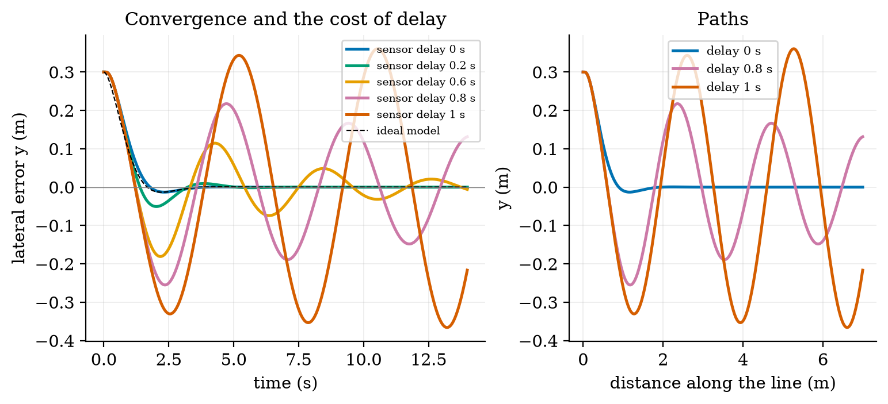
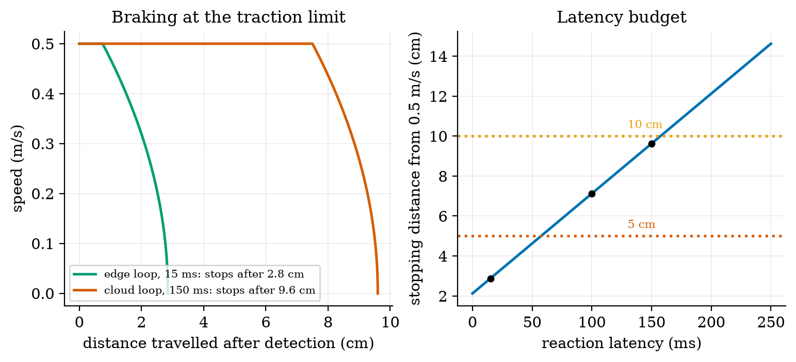

Unit 9 ready
Control Systems for Robots: From the Motor to the Line
The motor model, P, PI and PID control, step-response metrics, tuning and windup.
Session map
After this session you can:
- derive the wheel motor as a first-order system, with its time constant and its gain, from the electrical and mechanical equations, and find them for the rover;
- explain open loop, P, PI and PID control, predict the steady-state error of a P loop, and design a PI controller by pole-zero cancellation for a chosen speed of response;
- measure a step response (rise time, overshoot, settling time, steady-state error), and see what sampling, delay, saturation and encoder quantisation do to a design;
- find the ultimate gain and period of a sampled loop exactly, apply the Ziegler–Nichols rule, and judge it against the measured response;
- prevent integrator windup, make the rover follow a line, find the delay it tolerates, and compute its stopping distance from the reaction latency.
- Prerequisites: Unit 2 (the DC motor and its voltage limit), Unit 3 (encoder quantisation, the EMA filter), Unit 4 (control loop timing), Unit 8 (the shared rover). The exponential response of Unit 1.
- Difficulty ladder used: easy → medium → medium-hard → hard (Sections 3.1 to 3.4); the hardest tier is posed as open questions in Section 3.5.
- Deliverables: this document (.tex, .pdf, .docx), 6 figures, the module
codes/robotics/control_np/(the wheel motor, a discrete PID with anti-windup, step metrics, lambda and Ziegler–Nichols tuning, exact ultimate gain, line following with delay, stopping distance, andDynamicRover, which puts the motor loops under the sharedRoverof Unit 8; 10 tests), and logs of every printed number. - Source anchors: all formulas are derived in the text. The Ziegler–Nichols constants (classic PID: K_p=0.6K_u, T_i=0.5T_u, T_d=0.125T_u) were read in Wikipedia’s article on the method on 2026-10-11, a secondary source; the original paper (Ziegler and Nichols, Trans. ASME 64:759–768, 1942) and the textbook by Astrom and Murray were not read (the textbook’s host failed certificate verification, and the PDF was not downloaded). The reflected inertia J=1.0\times10^{-3} kg m^2, the friction coefficient 0.6, the 10 ms sample period, the one-sample delay, the 5 degree slope and the encoder quantisation are assumed or modelling choices; the motor constants are those of Unit 2.
1. Terms: the term tree
| Term | Symbol | One-line meaning | Where it appears | New / known |
|---|---|---|---|---|
| plant | the thing being controlled (here a wheel with its motor) | 3.1 | new | |
| open loop and closed loop (feedback) | commanding without looking, and commanding from a measurement of the result | 3.1 | known | |
| setpoint and error | r, e | the wanted value; e=r-y from now on (the control convention flagged in Unit 1) | 3.2 | known |
| back-EMF and torque constant | k | the motor’s voltage and torque per unit speed and per ampere | 3.2 | known |
| reflected inertia | J | the load’s inertia as seen at the motor shaft | 3.2 | new |
| time constant and gain (of a plant) | \tau, K | the speed of a first-order response and its steady-state ratio of output to input | 3.2 | known |
| proportional, integral, derivative action | K_p, K_i, K_d | output proportional to the error, to its accumulated sum, to its rate | 3.3 | new |
| PID controller | the sum of the three actions | 3.3 | new | |
| steady-state error | the error left after the transient | 3.3 | new | |
| rise time, overshoot, settling time | how fast, how far past, and how long until within a band | 3.3 | new | |
| saturation | the actuator’s limit (here \pm7 V) | 3.4 | new | |
| integrator windup and anti-windup | the integrator storing error while saturated; methods that prevent it | 3.4 | new | |
| pole-zero cancellation (lambda tuning) | \tau_c | choosing T_i=\tau so the closed loop is first-order with a chosen time constant | 3.3 | new |
| ultimate gain and period | K_u, T_u | the P gain at which the loop just oscillates, and the period of that oscillation | 3.4 | new |
| Ziegler–Nichols tuning | a rule that sets PID gains from K_u and T_u | 3.4 | new | |
| delay margin | the largest loop delay before the loop is unstable | 3.4 | new | |
| line following | steering to keep the lateral error to a line at zero | 3.4 | new | |
| stopping distance | distance travelled from detection to standstill | 3.4 | new |
Terms used but not taught here: transfer functions and Laplace transforms (used as shorthand, derived only where needed), Nyquist and Bode plots (named only), state-space control and model-predictive control (named only), Kalman filtering (Unit 10).
2. Remember
The plant is what we control; the controller computes its command from a setpoint r and a measurement y. With feedback (closed loop) the controller acts on the error e=r-y (the sign convention of control; Unit 1 used y-r for readability). Without feedback (open loop) the command ignores the result: cheap, but wrong whenever anything changes (a slope, a low battery).
A PID controller computes the command u=K_pe+K_i\!\int e\,dt+K_d\,\dot e: a part proportional to the error now, a part proportional to the error accumulated so far, and a part proportional to the error’s rate of change. With K_p alone the loop leaves a steady-state error; the integral term removes it; the derivative term damps oscillation but amplifies noise.
For a step in the setpoint: the rise time (time to go from 10% to 90% of the step), the overshoot (how far the response goes past the target, in percent of the step), the settling time (time until the response stays within 2% of the target) and the steady-state error (what is left at the end).
Memory hooks.
- P pushes, I remembers, D brakes. P acts on the present error, I on the past, D on the future (the trend).
- A P loop is a spring, an I loop a ratchet: the spring stops short of the target; the ratchet keeps winding until it gets there.
- Delay is the enemy of gain: every extra sample of delay lowers the gain the loop can stand.
- An integrator must know when the actuator is maxed out.
- Stop distance = reaction distance + braking distance.
Before you read on: three predictions (answers in Section 10).
- A wheel-speed loop uses a P controller with gain 1 V per rad/s on the rover’s motor (voltage-to-speed gain 3.49 rad/s per V). The setpoint is 10 rad/s. Roughly what speed does it settle at: 10, 7.8 or 5?
- The rover’s wheel is held still for one second while the speed setpoint is 15 rad/s, then released. A PI controller without protection against windup: what happens right after release: nothing, a small overshoot, or a surge to about 1.6 times the setpoint?
- The rover brakes from 0.5 m/s as hard as its tyres allow (friction coefficient 0.6). Reacting takes 150 ms (a cloud decision). How far does it travel from the moment the obstacle is detected: 2 cm, 5 cm or about 10 cm?
Recall quiz (answers in Section 10).
- What is the time constant of a first-order system, and what fraction of its final value is reached after one time constant?
- Why does a P-only controller leave a steady-state error?
- What does an integrator do when the actuator is saturated, and why is that a problem?
- Why is a D term dangerous with a quantised speed measurement?
- What two terms make up the stopping distance?
3. Understand: the derivation
3.1 Tier 1 (easy): intuition and a picture
Chapter 2 and Unit 8 made the rover’s wheels turn when the motors get a voltage; this Unit makes them turn at the right speed. Command a voltage and the wheel does not jump to a speed; it accelerates and settles, like the thermostat of Unit 1 settling toward a temperature. Figure 1 (left) shows the wheel’s speed after a step to 6 V: it approaches 20.9 rad/s smoothly, reaching 63% of the way (13.2 rad/s) after 112 milliseconds, the motor’s time constant. That shape is a first-order response, the same exponential as the room (Unit 1) and the RC filter (Unit 2).
The trouble with commanding a voltage for a wanted speed (open loop) is that the speed depends on the load. On a 5 degree slope, each wheel needs an extra torque of m g\sin5^\circ\,r/2=0.0212 N m, and an open-loop wheel that was doing 15.15 rad/s (0.5 m/s) slows by 2.38 rad/s (0.079 m/s, 16%). A controller that measures the speed and adjusts the voltage fixes this (Figure 1, right).

3.2 Tier 2 (medium): the wheel motor as a first-order plant
A permanent-magnet DC motor with an applied voltage u and speed \omega obeys two laws (Unit 2): the electrical loop u=iR+k\omega (resistance drop plus back-EMF) and the mechanical law that the torque ki accelerates the reflected inertia J (the rotor seen through the gearbox plus half the rover’s mass, \tfrac m2r^2, plus the rotor), against viscous friction b\omega and a load torque \tau_L: J\dot\omega=ki-b\omega-\tau_L,\qquad i=\frac{u-k\omega}{R}\quad\Longrightarrow\quad J\dot\omega=\frac kR\,u-\Big(b+\frac{k^2}{R}\Big)\omega-\tau_L. \tag{1} (The coil’s inductance is neglected: its time constant is milliseconds against the mechanical 112 ms.) Divide by d=b+k^2/R and rearrange: \tau\dot\omega+\omega=K\,u-\frac{\tau_L}{d},\qquad \tau=\frac Jd,\qquad K=\frac{k/R}{d}. \tag{2} This is a first-order system with time constant \tau and DC gain K rad/s per volt, plus a load that lowers the speed by \tau_L/d. With the Unit 2 motor (k=0.2328 V s/rad, R=7.5\ \Omega) we need b and J. Choose the friction so that the no-load current at the rated 6 V is the catalogue 0.15 A at the no-load speed 20.94 rad/s: b=k\,i_0/\omega_0=1.667\times10^{-3} N m s/rad. Then d=1.667\times10^{-3}+0.2328^2/7.5=8.891\times10^{-3} and K=3.491 rad/s per V, so 6 V gives 20.944 rad/s: exactly the no-load speed of Unit 2 (a check, not a coincidence of the model). With the assumed J=1.0\times10^{-3} kg m^2 (the reflected half-mass \tfrac m2r^2=0.75\times0.033^2=8.2\times10^{-4} plus about 1.8\times10^{-4} of reflected rotor), \tau=J/d=112.5 ms. The simulation reaches 63.2% of its final value at 112 ms and 95% at 336 ms, against \tau=112.5 ms and 3\tau=337 ms (fig01_motor.py). The load droop is \tau_L/d: for the slope, 0.0212/0.008891=2.38 rad/s.
Exact sampled form. Over one sample period T_s with the voltage held constant (a zero-order hold) the solution of (2) is exact: \omega_{k+1}=a\,\omega_k+(1-a)\Big(Ku-\frac{\tau_L}{d}\Big),\qquad a=e^{-T_s/\tau}. \tag{3} With T_s=10 ms, a=0.9149. The module’s WheelMotor.step is this update; it stays exact however large the step.
3.3 Tier 3 (medium-hard): P, PI, and tuning by cancellation
3.3.1 Proportional control and its steady-state error
With u=K_pe=K_p(r-\omega), a steady state (\dot\omega=0, no load) satisfies \omega=K K_p(r-\omega), so \omega_\infty=\frac{KK_p}{1+KK_p}\,r,\qquad\text{error fraction}=\frac1{1+KK_p}. \tag{4} For K_p=1 V per rad/s: 1/(1+3.491)=0.2227: the loop settles 22.3% short. Prediction 1 of Section 2: about 0.777\times10=7.8 rad/s. In simulation a 3 rad/s step ends 0.668 rad/s short, 0.668/3=0.2227, matching to the printed digits (Figure 2, orange). A larger gain shrinks the error but never to zero, and (Section 3.4) it cannot be raised without limit.
3.3.2 Integral action removes it
Add the integral term: u=K_p\big(e+\frac1{T_i}\int e\,dt\big). In a steady state the integral must be constant, which requires e=0: the error is driven to zero whatever the plant’s gain or the load (Figure 1, right: after the slope, the PI loop returns to 15.15 rad/s exactly, by raising the voltage from 4.34 V to 5.02 V; open loop could not). The price is a slower, possibly oscillatory approach, because the integral keeps accumulating while the error is still positive.
3.3.3 Designing the PI by pole-zero cancellation
Write the plant as G(s)=K/(\tau s+1) and the PI controller as C(s)=K_p\frac{T_is+1}{T_is}. The loop transfer is L(s)=C(s)G(s)=\frac{K_pK\,(T_is+1)}{T_is\,(\tau s+1)}\ \xrightarrow{\ T_i=\tau\ }\ \frac{K_pK}{\tau s}, \tag{5} because choosing T_i=\tau cancels the plant’s slow pole against the controller’s zero. A unit-feedback loop with L=K_pK/(\tau s) has the closed-loop transfer L/(1+L)=1/(\tau_cs+1) with \tau_c=\frac{\tau}{KK_p}\quad\Longleftrightarrow\quad K_p=\frac{\tau}{K\,\tau_c}. \tag{6} The closed loop is a first-order system with the time constant of our choice, with no overshoot: rise time 2.197\tau_c, settling time 3.912\tau_c. We choose \tau_c=30 ms, a quarter of the open-loop time constant: K_p=0.1125/(3.491\times0.03)=1.074 V per rad/s and T_i=112.5 ms. Simulated with a 1 ms sample and no delay, the loop rises in 65.0 ms (design 65.9 ms) and settles in 115 ms (design 117 ms) with 0.0% overshoot: the design works. With the real 10 ms sample and one sample of delay it is less perfect, as the next table shows.
| sample period, delay | rise 10 to 90% | overshoot | settling (2%) |
|---|---|---|---|
| 1 ms, none (ideal) | 65 ms | 0.0% | 115 ms |
| 5 ms, none | 60 ms | 0.1% | 105 ms |
| 10 ms, none | 50 ms | 0.3% | 90 ms |
| 10 ms, 1 sample | 30 ms | 3.5% | 90 ms |
| 10 ms, 2 samples | 20 ms | 31.7% | 220 ms |
| 20 ms, 1 sample | 20 ms | 48.5% | 320 ms |
| 50 ms, 1 sample | (no clean rise) | 405% | does not settle |
Table (analysis_lambda.py: no voltage limit, so the 10 ms, 1-sample row settles in 90 ms where the limited run of the next table says 80 ms): the lambda-tuned PI (K_p=1.074, T_i=112.5 ms, design \tau_c=30 ms, 3 rad/s step, clean speed measurement) as the sampling and delay get worse. The design assumes a continuous, instantaneous loop; each extra sample of delay or longer period eats the margin, and at 50 ms the same gains make the loop unstable. A design is only as good as the loop’s timing. (A first version of the metric code reported the settling time from the start of the experiment, 0.1 s too long; the ideal-case row, 115 ms against a design of 117 ms, is what exposed the offset.)
3.3.4 The step-response numbers for four controllers
Four controllers on a 3 rad/s (0.1 m/s) step, with the real 10 ms sample, one sample of delay, the \pm7 V limit and a clean speed measurement (Figure 2, left):
| controller | rise 10 to 90% | overshoot | settling (2%) | steady-state error | peak voltage |
|---|---|---|---|---|---|
| P, K_p=1.0 | never reaches 90% | 0% | none | 0.668 rad/s (22.3%) | 3.0 V |
| PI, lambda (K_p=1.07, T_i=112 ms) | 30 ms | 3.5% | 80 ms | 0 | 3.5 V |
| PI, aggressive (K_p=3, T_i=112 ms) | 10 ms | 48.8% | 620 ms | 0 | 7.0 V (saturated) |
| PID, Ziegler–Nichols (K_p=2.02, T_i=28.7 ms, T_d=7.2 ms) | 10 ms | 34.5% | 150 ms | 0 | 7.0 V (saturated) |

Quantisation. The speed is measured from encoder counts over T_s=10 ms (Unit 3): the step of the measurement is 2\pi/1320/0.01=0.476 rad/s, 16% of a 3 rad/s step. A proportional term passes that jitter straight to the motor; a derivative term, which responds to changes, amplifies it: at steady state the voltage’s standard deviation is 0.143 V for P, 0.225 V for the lambda PI and 0.778 V for the Ziegler–Nichols PID, 3.5 times the PI’s, and the aggressive PI with K_p=3 (89% of the ultimate gain below) is in a limit cycle of 14 V peak to peak (speed standard deviation 1.9 rad/s). The derivative term is therefore filtered (Section 3.4.1) and for a speed loop usually left out.
3.4 Tier 4 (hard): discrete PID, tuning rules, windup, lines and brakes
3.4.1 The discrete PID
The module implements the controller at a fixed sample period T_s as u_k=K_pe_k+I_k+D_k,\quad I_k=I_{k-1}+K_iT_s\,e_k,\quad D_k=\alpha D_{k-1}-\frac{K_pT_dN}{T_d+NT_s}\,(y_k-y_{k-1}),\ \ \alpha=\frac{T_d}{T_d+NT_s}, \tag{7} with K_i=K_p/T_i and T_d=K_d/K_p. Two details matter. The derivative acts on the measurement y, not on the error: a step in the setpoint then does not produce a spike in u (the “derivative kick”). And it passes through a first-order filter with a time constant T_d/N (N=10 here) that limits the high-frequency gain to K_pN.
3.4.2 The ultimate gain, exactly, and Ziegler–Nichols
The classic closed-loop method of Ziegler and Nichols (1942) is an experiment: with P control only, raise the gain until the loop just oscillates steadily; that gain is the ultimate gain K_u and the oscillation period is T_u. The rule then sets (as read in the secondary source) the classic PID to K_p=0.6K_u, T_i=0.5T_u, T_d=0.125T_u (and PI to 0.45K_u, 0.833T_u). For our sampled loop we need not experiment: the loop is linear and its stability limit is exact. With a=e^{-T_s/\tau}, b=K(1-a) and the voltage applied d samples late, a P controller gives \omega_{k+1}=a\omega_k+bK_p(r-\omega_{k-d}), whose characteristic polynomial is z^{d+1}-a\,z^{d}+bK_p=0. \tag{8} The loop is stable while all roots lie inside the unit circle. For d=0 the single root is a-bK_p, which reaches -1 at K_u=(1+a)/b=6.45 with an oscillation of two samples (T_u=20 ms). For d=1 (the usual case: one sample for computing and holding the output) the roots of z^2-az+bK_p have product bK_p, so they reach the unit circle when bK_p=1, K_u=1/b=3.3675, at the angle \varphi with \cos\varphi=a/2, i.e. \varphi=62.8^\circ, T_u=2\pi T_s/\varphi=57.35 ms. More delay costs gain:
| extra delay | 0 samples | 1 | 2 | 3 | 4 | 5 |
|---|---|---|---|---|---|---|
| ultimate gain K_u (V per rad/s) | 6.449 | 3.368 | 2.163 | 1.614 | 1.303 | 1.104 |
| period T_u (ms) | 20.0 | 57.4 | 92.6 | 126.1 | 158.1 | 188.9 |
| Ziegler–Nichols K_p=0.6K_u | 3.869 | 2.021 | 1.298 | 0.968 | 0.782 | 0.663 |

For d=1 the rule gives K_p=2.02, T_i=28.7 ms, T_d=7.2 ms: the row of the earlier table with 34.5% overshoot, a saturated voltage and 3.5 times the PI’s noise. Why is a classic rule so rough here? It was built for plants whose delay is a large part of their time constant, and aims at a “quarter-amplitude decay” (each peak a quarter of the last), which is deliberately oscillatory. Our plant has \tau=112 ms and an effective delay of about 15 to 20 ms: the delay is small relative to \tau, and a design that uses the delay as its only scale asks for T_i=29 ms, four times faster than the plant. The rule reads the plant’s timing from where the loop goes unstable, not from the plant itself. For a first-order plant with a known \tau and K, the lambda design of Section 3.3.3 is simpler, gentler and predictable. (This is a statement about this plant, with measured numbers, and not a general verdict on the rule.)
3.4.3 Saturation and integrator windup
The motor voltage is limited to \pm7 V (Unit 2: 7.4 V pack, 0.4 V bridge drop). When the controller asks for more, the actuator saturates and the loop is effectively open. An integrator does not know this: it keeps adding K_iT_se_k to its state. Suppose the wheel is blocked from 1 s to 2 s (a jam, or the rover pushed against a wall) while the setpoint is 15 rad/s. The error stays at 15 rad/s; the integrator adds K_i\times15\times1\ \text{s} with K_i=K_p/T_i=9.55 V per rad/s per s, about 143 V, far beyond anything the actuator can use. After the release, the integrator must unwind: the output stays at the limit until the error has been negative long enough, and the wheel overshoots. In the simulation (Figure 4): with no protection the integrator holds 146 V at the release, the speed surges to 24.4 rad/s (1.63 times the setpoint; prediction 2 of Section 2: a surge to about 1.6) and takes 2.12 s to come back within 2%. With clamping (stop integrating while saturated and the error pushes further in the same direction) the integrator holds 4.3 V, the peak is 15.2 rad/s and the recovery takes 0.09 s; with back-calculation (I\leftarrow I+K_b(u_{\text{sat}}-u)T_s, which drains the integrator while the output is limited) 7.0 V, 17.1 rad/s and 0.34 s. Either method is a single line of code; leaving it out is a common cause of robots lurching after a jam.

3.4.4 Following a line: a cascade of loops
Heading and line following sit above the wheel loops: the outer controller turns a lateral error into a turn-rate command \omega; the wheel loops (fast, \tau_c\approx30 ms) deliver it. For small angles the kinematics of Unit 8 give \dot y=v\theta and \dot\theta=\omega for the lateral offset y from the line and the heading error \theta. The control law \omega=-k_1y-k_2\theta gives \ddot y=v\dot\theta=v\omega=-vk_1y-k_2\dot y, i.e. \ddot y+k_2\dot y+vk_1\,y=0,\qquad\omega_n=\sqrt{vk_1},\quad \zeta=\frac{k_2}{2\sqrt{vk_1}}. \tag{9} A damped second-order system whose time scale is set by the speed v: faster travel needs a smaller k_1 for the same \omega_n, because the same turn rate removes the offset in a longer distance. With v=0.5 m/s, k_1=8 and k_2=2.8: \omega_n=2 rad/s and \zeta=0.7. Starting 0.3 m off the line with the proper wheel loops, motor dynamics, encoder quantisation and the turn-rate limit of Unit 8 (2.39 rad/s at cruise speed), the rover undershoots by 1.3 cm and is within 1 cm of the line after 2.73 s, against 1.33 cm and 2.65 s for the ideal model (Figure 5).
Delay. If the lateral sensor reports its measurement d seconds late, the open loop is L(j\omega)=vk_1e^{-j\omega d}/\big(j\omega(j\omega+k_2)\big). Its magnitude is 1 at \omega_c with \omega_c\sqrt{\omega_c^2+k_2^2}=vk_1, i.e. \omega_c^2=\tfrac12\big(-k_2^2+\sqrt{k_2^4+4v^2k_1^2}\big)=1.68, \omega_c=1.296 rad/s. Its phase is -\pi/2-\arctan(\omega_c/k_2)-\omega_cd, which reaches -\pi at the delay margin d_{\max}=\frac{\pi/2-\arctan(\omega_c/k_2)}{\omega_c}=\frac{1.5708-0.4337}{1.296}=0.877\ \text{s}. \tag{10} The simulation shows what this means in practice: the undershoot grows from 1.3 cm (no delay) to 5.1 cm (0.2 s), 18.1 cm (0.6 s, with ringing that takes 13 s to settle), 25.5 cm (0.8 s, still ringing with 14.8 cm amplitude after 14 s) and 36.6 cm (1.0 s, a sustained oscillation of 0.37 m, held at that size by the turn-rate limit). Instability begins near the closed-form 0.88 s, a little earlier (0.8 s already rings) because the motor loops add their own lag. A margin of 0.88 s is not a design target: a good response needs the delay to be a small fraction of it, here below about 0.2 s. A line sensor on the rover sees the line in milliseconds; the same sensor read through the cloud (Unit 1: 150 ms) would already cost 4 cm of undershoot.

3.4.5 Stopping: reaction plus braking
Requirement R3 of Unit 1 asked that the rover stop before an obstacle, expressed as a loop time under 100 ms (a blind distance of 5 cm at 0.5 m/s). The rover also needs room to brake. The tyres can transmit a deceleration of at most \mu g with the friction coefficient \mu (assumed 0.6): 5.89 m/s^2, 178.4 rad/s^2 per wheel. The motors could brake harder than that: plug braking at -7 V from 15.15 rad/s gives 352 rad/s^2 (11.6 m/s^2), twice the traction limit, so the tyres, not the motors, set the braking and any command beyond it only skids. The stopping distance from the moment an obstacle is detected is therefore s_{\text{stop}}=v\,t_{\text{react}}+\frac{v^2}{2\mu g}. \tag{11} At 0.5 m/s the braking part is 0.25/(2\times5.886)=2.12 cm (4.25 cm for a wet floor, \mu=0.3; 1.42 cm for \mu=0.9) and the reaction part is 0.5\,t_{\text{react}}: for the 15 ms edge loop, 0.75 cm, total 2.87 cm (simulated: 2.85 cm); for 100 ms, 7.12 cm; for the 150 ms cloud path, 9.62 cm (simulated 9.60 cm). Prediction 3 of Section 2: about 10 cm. The latency that still stops within 5 cm is (0.05-0.0212)/0.5=57.5 ms; within 10 cm, 157.5 ms. The 100 ms of Unit 1’s requirement turns out to be too slack: it was only the reaction distance, and the rover needs another 2.1 cm to stop.

3.5 Tier 5 (hardest): open questions
- Why does derivative action help a heading loop but not a speed loop? Heading is the integral of the turn rate (a plant with an integrator and a lag, a second-order system); a speed loop is first-order. Use the root locus idea (named only) or simulation to show where a D term adds damping and where it only adds noise.
- Bumpless transfer and mode switching. When the rover changes from line following to a stop command, how must the controller’s integrator be initialised so that the output does not jump?
- Is a faster loop always better? The lambda design improves as T_s falls, but a faster loop needs a faster encoder estimate and a processor that is not busy with the network (Unit 4). With a 10 ms quantisation step of 0.476 rad/s, what sample period minimises the noise in the speed estimate for a loop with a time constant of 30 ms? (Hint: consider the trade between the quantisation step 2\pi/(\mathrm{CPR}\,T_s) and the delay the longer window adds.)
4. Apply
4.1 Worked problems
Problem 1 (motor constants). A motor has k=0.05 V s/rad, R=2\ \Omega, friction b=10^{-4} N m s/rad and reflected inertia J=2\times10^{-4} kg m^2. Find \tau, K and the speed at 12 V with no load.
Solution. d=b+k^2/R=10^{-4}+0.0025/2=1.35\times10^{-3}; \tau=J/d=2\times10^{-4}/1.35\times10^{-3}=0.148 s; K=(k/R)/d=0.025/1.35\times10^{-3}=18.5 rad/s per V; at 12 V, 222 rad/s.
Problem 2 (P control). The plant has K=3.49 rad/s per V. Which K_p leaves a steady-state error of at most 5%?
Solution. 1/(1+KK_p)\le0.05\Rightarrow KK_p\ge19\Rightarrow K_p\ge5.4 V per rad/s. That exceeds the ultimate gain of 3.37 (Section 3.4.2): impossible with P alone. This is why we use integral action.
Problem 3 (lambda tuning). Design a PI for \tau=0.112 s, K=3.49 and a closed-loop time constant of 50 ms.
Solution. T_i=\tau=112 ms; K_p=\tau/(K\tau_c)=0.112/(3.49\times0.05)=0.642 V per rad/s. Rise time about 2.2\times50=110 ms.
Problem 4 (windup). A PI with K_i=9.5 V per rad/s per s sees a constant error of 10 rad/s for 0.5 s while saturated. How much does the integrator store, and how long must the output stay at the limit afterwards if the error then becomes -2 rad/s (voltage limit 7 V, integrator held at the value at the time of release)?
Solution. Stored 9.5\times10\times0.5=47.5 V. To unwind to about 7 V at K_i\times2=19 V per second takes (47.5-7)/19=2.1 s. With clamping it would have stored at most about 7 V.
Problem 5 (stopping distance). At 0.8 m/s with \mu=0.5 and a reaction time of 40 ms, what is the stopping distance?
Solution. 0.8\times0.04+0.64/(2\times0.5\times9.81)=0.032+0.0652=0.097 m (9.7 cm).
4.2 Code and figures
import control_np as C
m = C.WheelMotor() # tau = 112.5 ms, K = 3.491 rad/s per V
kp, ti = C.lambda_pi(m.K, m.tau, tau_c=0.03) # 1.074, 0.1125
pid = C.PID(kp, kp / ti, ts=0.01, windup="clamp")
sim = C.simulate_speed_loop(pid, m, 3.0, t_end=2.0) # dict: t, y (measured), w (true), u, r, i
print(C.step_metrics(sim["t"], sim["w"], 3.0))
print(C.ultimate_gain(m, 0.01, delay_samples=1)) # (3.3675, 0.0573)
print(C.line_delay_margin(8.0, 2.8, 0.5)) # 0.8772 s
print(C.stopping_distance(0.5, 0.150, mu=0.6)) # 0.0962 m
r = C.DynamicRover(); r.set_body(0.5, 0.0); r.run(3.0) # motor loops under the shared Rover of Unit 8The module and README are in codes/robotics/control_np/. Its ten tests check: that the 6 V no-load speed equals the Unit 2 value and that the response reaches 63.2% at \tau; the step metrics against the analytic first-order response (rise \tau\ln9, settling \tau\ln50) and that settling is measured from the start of the data; P-only error against 1/(1+KK_p) and zero error with PI; the lambda design’s 63% time against \tau_c; the windup surge with none, clamping and back-calculation; the ultimate gain against the closed forms 1/b and (1+a)/b with the simulation decaying below and growing above it; the stopping distance; line following and its delay margin against 0.877 s; and the dynamic rover’s tracking.
What would look different if the theory were wrong? If (4) were wrong, the P loop’s error would not be 22.3%; it is 22.3% to three digits. If (8) were wrong, the simulation would not flip from decay to growth exactly at K_u; it does. If (10) were wrong the line follower would be stable well above 0.88 s or ringing well below it; it rings from 0.8 s and is sustained at 1.0 s, with the motor loops’ lag explaining the small gap.
5. Analyze
Limits. As K_p\to\infty the P loop’s error tends to 0 but the loop goes unstable at K_u; as T_i\to\infty the PI becomes a P. As the delay d\to0 and T_s\to0 the lambda design becomes exact; as d grows the usable gain falls like 1/(d+\tau\text{-dependent term}) (3.37, 2.16, 1.61 for d=1,2,3). The braking distance tends to zero as \mu\to\infty; the reaction distance never does.
Dominance. In the stopping distance, reaction dominates once t_{\text{react}}>v/(2\mu g)=42 ms: at 150 ms it is 78% of the total (7.5 of 9.6 cm); at 15 ms braking is 74% (2.1 of 2.9 cm). For a first-order plant with sampling, the delay dominates the achievable closed-loop speed once \tau_c is not much larger than a few samples.
Order-of-magnitude estimate. The time constant is J/(b+k^2/R); with k^2/R=7.2\times10^{-3} dominating b=1.7\times10^{-3}, \tau\approx10^{-3}/8.9\times10^{-3}=0.11 s: the electrical damping (the back-EMF) sets the speed of the motor, not the friction. This is why a shorted motor (large effective k^2/R) brakes strongly.
Sensitivity. The lambda design’s overshoot depends steeply on the delay: 0.3% (no delay), 3.5% (1 sample), 31.7% (2 samples) at T_s=10 ms. The ultimate gain falls by 48% from 0 to 1 sample of delay and 36% from 1 to 2.
Failure modes. (1) Open-loop speed control on a slope. (2) P-only control: a permanent error. (3) Integral windup after a stall. (4) A D term on a quantised measurement. (5) Gains tuned for a continuous controller on a slow, delayed loop (the lambda PI at 50 ms). (6) Rules applied outside their assumptions (Ziegler–Nichols on a plant whose delay is small against its time constant). (7) A long reaction path for a safety stop (Section 3.4.5).
Items used from the pedagogy checklist: limits, dominance, estimate, sensitivity, failure modes, convergence (the sample period and delay table), invariants (the 6 V no-load speed equals Unit 2’s), residual (the settling-time offset caught by the ideal row), uncertainty (the quantisation noise), and a priori versus a posteriori (the P error, K_u and the delay margin were computed before they were simulated).
6. Evaluate
P, PI or PID for the wheel? PI. P leaves a 22% error; the D term of a PID adds noise (3.5 times the voltage noise) for a first-order plant that has nothing to damp. PID earns its place on a plant with a second dynamic (a position loop, the heading loop on its own, a flexible arm).
Tuning rules. Lambda tuning needs a model (\tau and K, found from one step response) and gives a predictable closed loop. Ziegler–Nichols needs an experiment at the stability limit, which is dangerous on a real robot (it must be driven to oscillation) and, for this plant, produced a lively response. Manual tuning from the step-response table of Section 3.3.4 is also reasonable. A good practice is to simulate first, as here.
Cascade versus single loop. The wheel loops (30 ms) inside a heading or line loop (0.5 s time scale) separate time scales by a factor of 15 or more, which keeps each design simple; the inner loop must be fast enough that the outer one can ignore its lag.
Edge versus cloud for control. The line-following margin (0.88 s) is generous, but a good response needs a delay under 0.2 s; the stop needs under 57.5 ms for 5 cm. The wheel loop, with a 10 ms period, needs a delay of one sample at most. Together these put the wheel loops, the stop and the line following on the rover (the edge), as Unit 1 argued from latency alone.
Context. The PID controller dates from the early twentieth century, and the great majority of industrial control loops are PI or PID (a common statement from memory, not verified here). When NOT to use these methods: for strongly nonlinear plants far from the design point, for plants with long dead time (use a predictor), for multi-input systems where loops interact, or where a model-based method is justified (named: state feedback, model-predictive control).
Honesty about this Unit’s numbers. The motor model is first order with a viscous friction chosen to match the Unit 2 catalogue numbers and an assumed reflected inertia; no real wheel was measured. Every closed-loop number is a simulation of that model with the stated sample period, delay, limit and quantisation. The Ziegler–Nichols constants come from a secondary source and the original paper was not read. The friction coefficient of 0.6 and the 5 degree slope are assumed.
7. Create
- Identify the plant from data. Simulate a step with 3% measurement noise, fit \tau and K from the response, then design the lambda PI from the fitted values and compare its metrics with the exact design.
- Tune to a delay budget. Choose the fastest \tau_c that keeps overshoot under 5% for a loop with 2 samples of delay, using
step_metrics. - A hill-start test. Drive
DynamicRoverup a slope that appears at a given time (add a load torque to both motors) and measure the speed dip and the distance lost. - Make the line follower speed-aware. Scale k_1 and k_2 with v to keep \omega_n and \zeta constant, and test at 0.2 and 0.5 m/s.
- Could become a package module:
iotrobotics.controlwithPID,WheelMotor,lambda_pi, the step metrics andDynamicRover, reused by Units 10 to 12.
Running project, Layer 8: wheel-speed and heading control. The rover’s wheels now run PI loops (lambda tuned, K_p=1.07 V per rad/s, T_i=112 ms, anti-windup by clamping, 10 ms period, one sample of delay) under a line-following law (k_1=8, k_2=2.8). Updated requirements:
| id | requirement | status after Unit 9 |
|---|---|---|
| R3 | the rover stops before an obstacle | restated: stopping distance from detection under 5 cm needs a reaction latency of at most 57.5 ms (2.87 cm at the 15 ms edge loop; 7.12 cm at 100 ms; 9.62 cm at the 150 ms cloud path); the old “loop under 100 ms” gave 7.1 cm; verified with the real sensors in Unit 11 |
| R30 (new) | wheel speed settles within 2% in 100 ms with at most 5% overshoot for 0.1 m/s steps | met in simulation: 80 ms, 3.5% (clean measurement); fails with two samples of delay (31.7% overshoot) |
| R31 (new) | speed within 2% of the setpoint on a 5 degree slope | PI dips 3.5% for 0.10 s and returns exactly; open loop drops 16% and stays |
| R32 (new) | after a stall the wheel does not surge | clamping: peak 15.2 rad/s (1.6% over) and 0.09 s recovery; without it 24.4 rad/s and 2.1 s |
| R33 (new) | the rover reaches the line (within 1 cm) from a 0.3 m offset within 3 s | met up to a lateral-sensor delay of 0.2 s (2.97 s); the delay margin is 0.88 s; the lateral sensor must be on the rover |
| R34 (new) | control loop timing | wheel loop period 10 ms with at most one sample of delay; two samples cost 32% overshoot |
| S1 | safe state when the link is lost (Unit 7) | the stop command uses the same loops: braking is traction-limited at 5.9 m/s^2, so a stop from 0.5 m/s takes 0.085 s after the command |
8. Visualization lesson
| Chart type | Best for | How it misleads | matplotlib call |
|---|---|---|---|
| step-response plot with a target line | judging a controller (rise, overshoot, settling) | different step sizes or time axes make controllers look alike or different; use the same step | ax.plot(t, y), ax.axhline(r, ls=":") |
| family of responses near a stability limit | seeing how a loop approaches instability | a fixed time window hides slow growth; print the growth ratio | ax.plot(t, y_k) for several gains |
| control-effort plot (the command as well as the output) | what the controller asks of the actuator | an output that looks perfect may need a saturated, noisy command | ax.plot(t, u) |
| two-panel output and internal state (speed and integrator) | explaining windup | the integrator’s size (146 V) dwarfs the actuator’s range; mark the limit | ax.plot(t, i), ax.axhline(7) |
| delay sweep (several delays on one axes) | the cost of a parameter | too many curves; choose a few that tell the story (0, 0.2, 0.6, 0.8, 1.0 s) | ax.plot(t, y_d) per delay |
| path in the plane with equal axes | what the robot actually did | the time axis is gone; add a second panel against time | ax.plot(x, y), ax.set(aspect="equal") |
| budget line with threshold bands | a requirement as a limit on a parameter (latency for a stop distance) | the line is exact only for the stated friction; say it | ax.plot(lat, s), ax.axhline(5) |
Reading Figure 2 (right) as a chart. The output panel says all three controllers reach the setpoint; the effort panel is what separates them. A step-response plot alone would have rated the Ziegler–Nichols PID as “fast”; its command shows 3.5 times the noise.
9. Problem set
- (easy) A first-order system has \tau=0.2 s and K=5. What is its output 0.4 s after a unit step, and its 2% settling time?
- (medium) A P loop around the rover’s wheel motor (K=3.49) uses K_p=0.6. Find the steady-state error for a 12 rad/s setpoint and the extra error when a load adds a -0.0212 N m torque (use d=8.89\times10^{-3}).
- (medium-hard) Design a lambda PI with \tau_c=20 ms for \tau=112.5 ms and K=3.491. Using (8) with a=e^{-0.01/0.1125}, check whether the integral-free part (K_p alone, one sample of delay) is below the ultimate gain, and estimate the overshoot from the table of Section 3.3.3.
- (hard) Derive the characteristic polynomial (8) for d=1 and show that the ultimate gain is 1/b and \cos\varphi=a/2. Evaluate T_u for T_s=20 ms (with \tau=112.5 ms).
- (hardest) A rover reacts to an obstacle with a total latency of t_r and brakes at \mu g. The ultrasonic sensor first sees obstacles at 1.5 m range and the rover cruises at 0.5 m/s. Find the maximum cruise speed for which the rover stops before an obstacle detected at 1.5 m, for t_r=15 ms and t_r=150 ms and \mu=0.3 (a wet floor). State what you conclude about speed limits.
10. Retrieval practice and recap
Answers to the Section 2 predictions.
- About 7.8 rad/s: K_p K/(1+K_pK)\times10=0.777\times10.
- A surge to about 1.6 times the setpoint (24.4 rad/s against 15), with 146 V stored in the integrator.
- About 10 cm (9.62 cm): 7.5 cm of travel while reacting plus 2.1 cm of braking.
Answers to the Section 2 recall quiz.
- The time for the response to cover 63.2% of the way to its final value (1-e^{-1}).
- A steady state with a nonzero command requires a nonzero error when the controller is proportional only: the command is K_p times the error.
- It keeps accumulating the error although the actuator cannot respond, storing far more than can be used; after the disturbance ends it must unwind, causing a surge.
- A derivative term responds to changes, and a quantised measurement jumps by one count at a time, so the derivative turns quantisation jitter into large command noise.
- The distance travelled during the reaction (speed times latency) and the braking distance (v^2/2\mu g).
Explain it to a friend.
- Why does a thermostat-like P controller on a motor never quite reach the speed you ask for?
- Why can a wheel controller hurt the robot after the robot has been held still?
- Why does a delay of a few hundredths of a second matter for a wheel loop but a delay of a tenth of a second not for a line follower?
Re-derive by hand tomorrow, without looking: (a) \tau=J/(b+k^2/R) and K=(k/R)/(b+k^2/R) from the motor equations; (b) T_i=\tau, K_p=\tau/(K\tau_c) from cancellation; (c) the stopping distance vt+v^2/(2\mu g).
11. Where next
- Unit 10 gives the rover eyes and a memory of where it has been: Gaussian noise, Bayes’ rule, the Kalman filter, sensor fusion of the encoders with a gyroscope, ultrasonic ranging errors and an occupancy grid, which is what closes the odometry-drift requirement R5 of Unit 8.
- Terms named here but not taught: transfer functions and Bode plots, state-space and model-predictive control. They are registered in CURRICULUM.md.
- Open threads: the Ziegler–Nichols original and the textbook were not read; J, \mu, the slope and the sample period are assumed; a real wheel’s response was not measured; the heading loop was tested only through the line follower.